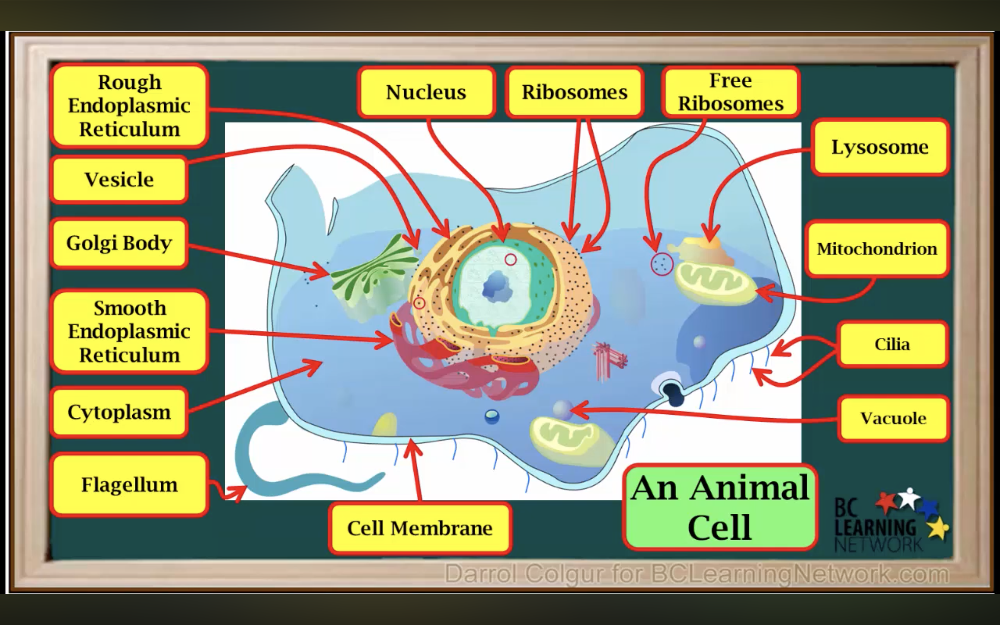
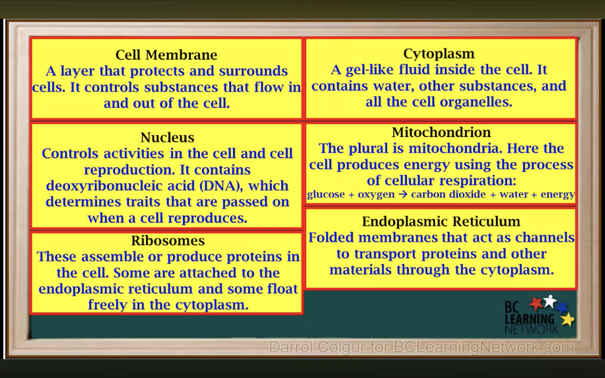
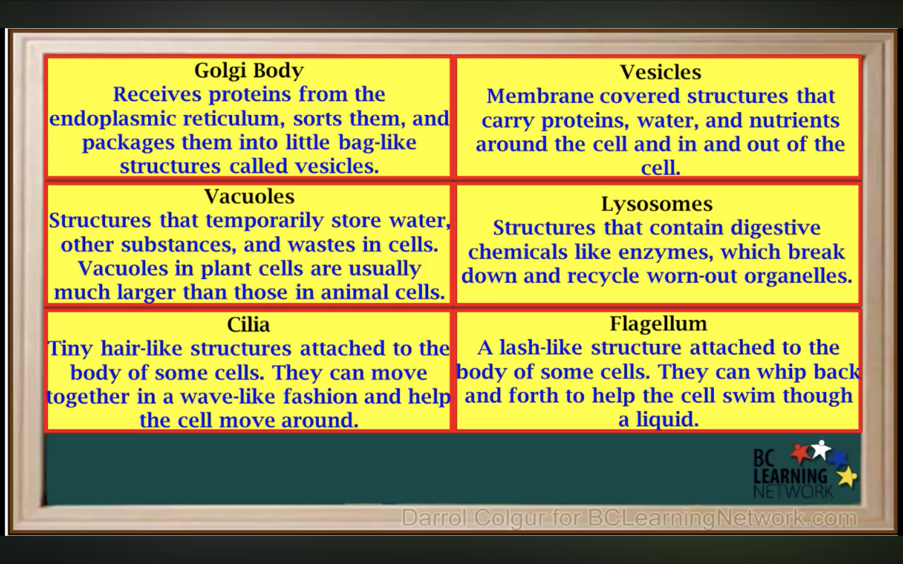
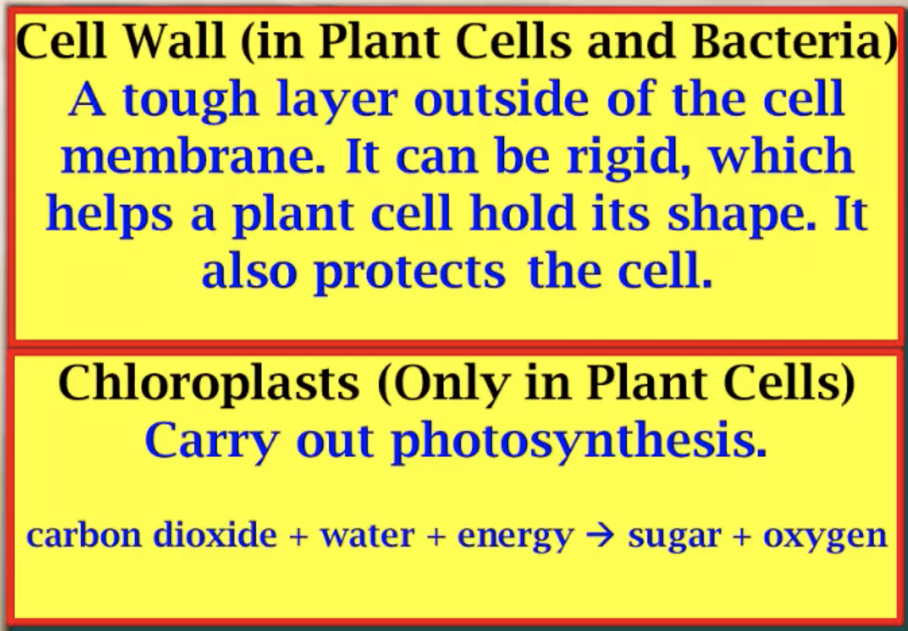
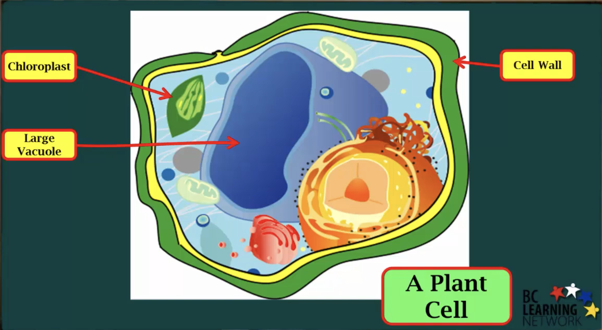

| English (from image) | 中文翻译 |
|---|---|
| Rough Endoplasmic Reticulum | 粗面内质网 |
| Vesicle | 囊泡 |
| Golgi Body | 高尔基体 |
| Smooth Endoplasmic Reticulum | 光面内质网 |
| Cytoplasm | 细胞质 |
| Flagellum | 鞭毛 |
| Nucleus | 细胞核 |
| Ribosomes | 核糖体 |
| Free Ribosomes | 游离核糖体 |
| Lysosome | 溶酶体 |
| Mitochondrion | 线粒体 |
| Cilia | 纤毛 |
| Vacuole | 液泡 |
| Cell Membrane | 细胞膜 |
| An Animal Cell | 动物细胞 |

| English (exact from image) | 中文翻译 |
|---|---|
|
Cell Membrane A layer that protects and surrounds cells. It controls substances that flow in and out of the cell. |
细胞膜：一层保护并包围细胞的薄层。它控制进出细胞的物质。 |
|
Cytoplasm A gel-like fluid inside the cell. It contains water, other substances, and all the cell organelles. |
细胞质：细胞内部的凝胶状液体。它含有水、其他物质以及所有细胞器。 |
|
Nucleus Controls activities in the cell and cell reproduction. It contains deoxyribonucleic acid (DNA), which determines traits that are passed on when a cell reproduces. |
细胞核：控制细胞活动和细胞繁殖。它含有脱氧核糖核酸（DNA），决定细胞在繁殖时传递的性状。 |
|
Mitochondrion The plural is mitochondria. Here the cell produces energy using the process of cellular respiration: glucose + oxygen → carbon dioxide + water + energy |
线粒体：其复数形式为 mitochondria。细胞在这里通过细胞呼吸产生能量： 葡萄糖 + 氧气 → 二氧化碳 + 水 + 能量 |
|
Endoplasmic Reticulum Folded membranes that act as channels to transport proteins and other materials through the cytoplasm. |
内质网：折叠的膜结构，充当通道，将蛋白质和其他物质在细胞质中运输。 |
|
Ribosomes These assemble or produce proteins in the cell. Some are attached to the endoplasmic reticulum and some float freely in the cytoplasm. |
核糖体：在细胞中组装或合成蛋白质。一些附着在内质网上，另一些则自由漂浮在细胞质中。 |

| English (exact from image) | 中文翻译 |
|---|---|
|
Golgi Body Receives proteins from the endoplasmic reticulum, sorts them, and packages them into little bag-like structures called vesicles. |
高尔基体：从内质网接收蛋白质，对其进行分类，并将它们包装成被称为囊泡的小袋状结构。 |
|
Vesicles Membrane covered structures that carry proteins, water, and nutrients around the cell and in and in and out of the cell. |
囊泡：被膜包裹的结构，在细胞内部以及进出细胞时运输蛋白质、水和养分。 |
|
Vacuoles Structures that temporarily store water, other substances, and wastes in cells. Vacuoles in plant cells are usually much larger than those in animal cells. |
液泡：在细胞内暂时储存水、其他物质和废物的结构。植物细胞中的液泡通常比动物细胞中的大得多。 |
|
Lysosomes Structures that contain digestive chemicals like enzymes, which break down and recycle worn-out organelles. |
溶酶体：含有消化性化学物质（如酶）的结构，用来分解并回收老化的细胞器。 |
|
Cilia Tiny hair-like structures attached to the body of some cells. They can move together in a wave-like fashion and help the cell move around. |
纤毛：附着在某些细胞表面的微小毛状结构。它们可以以波浪形式协同摆动，帮助细胞移动。 |
|
Flagellum A lash-like structure attached to the body of some cells. They can whip back and forth to help the cell swim though a liquid. |
鞭毛：附着在某些细胞上的鞭状结构。它可以来回摆动，帮助细胞在液体中游动。 |

| English (exact from image) | 中文翻译 |
|---|---|
|
Cell Wall (in Plant Cells and Bacteria) A tough layer outside of the cell membrane. It can be rigid, which helps a plant cell hold its shape. It also protects the cell. |
细胞壁（存在于植物细胞和细菌中）：位于细胞膜外的一层坚硬结构。它可以很坚硬，帮助植物细胞保持形状，同时也保护细胞。 |
|
Chloroplasts (Only in Plant Cells) Carry out photosynthesis. carbon dioxide + water + energy → sugar + oxygen |
叶绿体（只存在于植物细胞中）：进行光合作用。 二氧化碳 + 水 + 能量 → 糖 + 氧气 |

| English (from image) | 中文翻译 |
|---|---|
| Chloroplast | 叶绿体 |
| Large Vacuole | 大型中央液泡 |
| Cell Wall | 细胞壁 |
| A Plant Cell | 植物细胞 |